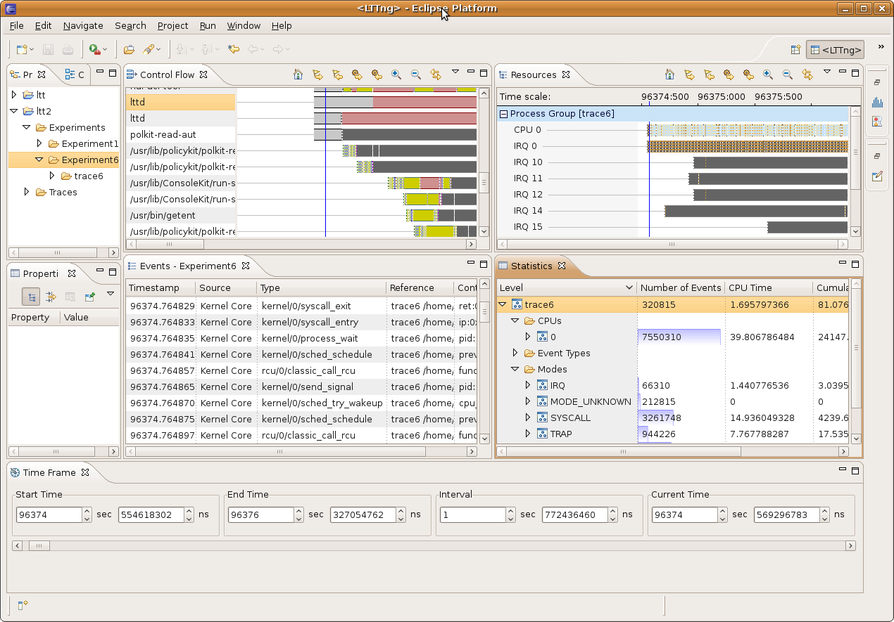

LTTng
LTTng is a kernel tracer for Linux. It helps tracking down performance issues and debugging problems involving multiple concurrent processes and threads.
Its trace analysis counterpart, The LTTng Eclipse plug-in, permits to analyze and show the traces gathered by LTTng.
